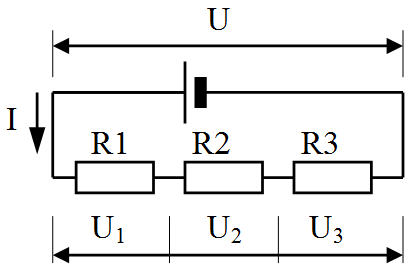
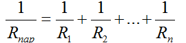
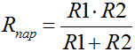
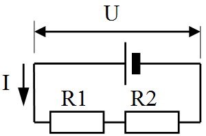
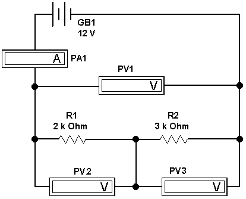
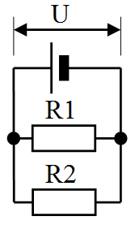
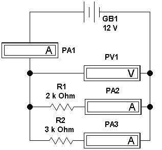

Electronics Workbench
Исследование цепей постоянного тока в программе Electronics Workbench
Краткая теория
Последовательное соединение резисторов
При последовательном соединении резисторов напряжение на концах всей цепи складывается из напряжений на каждом резисторе:
U = U1 + U2 + U3.
По закону Ома для участка цепи напряжение на каждом резисторе:
U1 = R1I; U2 = R2I; U3 = R3I,
где I = I1 = I2 - общий ток, текущий в цепи.

Рис. 1 - Последовательное соединение резисторов
Полное сопротивление цепи n последовательно соединенных резисторов:
Rпс = R1 + R2 + R3+…+ Rn.
При последовательном соединении резисторов их общее сопротивление равно сумме электрических сопротивлений каждого резистора.
Параллельное соединение резисторов
При параллельном соединении резисторов через цепь течет полный ток I, который складываетсяиз токов через каждый резистор:
I = I1 + I2 + I3.
Рис. 2 - Параллельное соединение резисторов
Напряжения на всех резисторах равны:
U = U1 = U2 = U3
RпарI = R1I1 = R2I2 = R3I3.
Полное сопротивление цепи из n параллельно соединенных резисторов:

Полное сопротивление цепи из двух параллельно соединенных резисторов:

При параллельном соединении проводников величина, обратная сопротивлению цепи, равна сумме обратных величин сопротивлений всех параллельно соединенных проводников.
При параллельном соединении резисторов их общее сопротивление уменьшается и всегда меньше сопротивления каждого отдельно взятого резистора.
Порядок выполнения работы
1. Исследование последовательного соединения резисторов
- Рассчитайте полное сопротивление резисторов подключенных к источнику питания (рис. 3). Номинальные сопротивления резисторов и источника питания взять из таблицы 1 (по варианту).

Рис. 3 - Последовательное соединение двух резисторов
- Рассчитайте силу тока и напряжение на каждом резисторе.
- Полученные результаты запишите в таблицу отчета.
Таблица 1
| № варианта |
1 | 2 | 3 | 4 | 5 | 6 | 7 | 8 | 9 | 10 |
|---|---|---|---|---|---|---|---|---|---|---|
| R1, кОм | 1,2 | 1,6 | 2,4 | 1,8 | 3,6 | 1 | 2,2 | 1,6 | 1,5 | 1,2 |
| R2, кОм | 2,7 | 3,3 | 1,6 | 2,2 | 2,2 | 1,8 | 2,4 | 1 | 3,3 | 1,5 |
| U, В | 12 | 9 | 12 | 9 | 12 | 9 | 12 | 9 | 12 | 9 |
- Постройте в программе «Electronics Workbench» модель электрической схемы для исследования последовательного соединения резисторов (рис. 4).

Рис. 4 - Модель электрической схемы для исследования последовательного соединения резисторов
- Установите параметры элементов схемы (по варианту).
- Измерьте силу тока и напряжения на участках цепи.
- Полученные результаты запишите в таблицу отчета.
- Рассчитайте значения сопротивлений резисторов и их общее сопротивление по показаниям измерительных приборов.
- Сформулируйте выводы по полученным результатам.
2. Исследование параллельного соединения резисторов
- Рассчитайте общее сопротивление резисторов подключенных параллельно к источнику питания (рис. 5). Номинальные сопротивления резисторов и источника питания взять из таблицы 1 (по варианту).

Рис. 5 - Параллельное соединение двух резисторов
- Рассчитайте силу тока и напряжение на каждом резисторе.
- Полученные результаты запишите в таблицу отчета.
- Постройте в программе «Electronics Workbench» модель электрической схемы, для исследования последовательного соединения резисторов (рис. 6).

Рис. 6 - Модель электрической схемы для исследования параллельного соединения резисторов
- Установите параметры элементов схемы.
- Измерьте силу тока и напряжения на участках цепи.
- Полученные результаты запишите в таблицу отчета.
- Рассчитайте значения сопротивлений резисторов и их общее сопротивление по показаниям измерительных приборов.
- Сформулируйте выводы по полученным результатам.